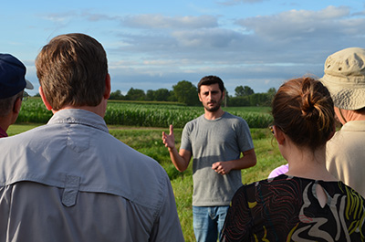
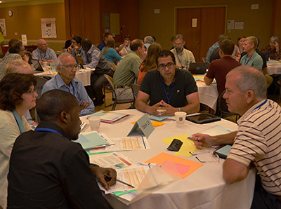

Find us on Twitter
Find us on TwitterFARMERS AND CROP ADVISORS!
Registration now open through August 1, for online participants only. In-person attendance is now closed.
It is an exciting time to be in agriculture. The landscape is changing, bringing new opportunities, innovations, and more than a few challenges.
This conference will bring together scientists, farmers, crop advisors and invited ag industry partners to discuss climate uncertainty, impacts on agriculture and our water and soil resources, and what can be done to make the agricultural landscape both environmentally healthy and productive. We will look at existing and new practices that can help farmers create management systems that sustain a competitive agriculture and enhance the ecological integrity of the landscape at the same time.
Crop advisors can earn continuing education credits for CCA certification through in-person or online attendance. Click on the "Crop Advisor CEUs" link on the right sidebar for details.
Farmers and crop advisors, please plan to join us in Ames, Iowa, August 5-7, for a conference designed exclusively for YOU. You'll meet and talk with other farmers, crop advisors, scientists and industry leaders who are exploring ways to make corn/soybean-based systems more resilient to weather extremes.
Besure to click on the links to the right where you'll find the conference program and agenda, information on how to register and much more.
REGISTRATION OPEN NOW THROUGH AUGUST 1, FOR ONLINE ATTENDANCE ONLY. IN-PERSON ATTENDANCE IS NOW CLOSED. See REGISTRATION PAGE link on right sidebar.
Future Farmers
Scholarships are available for attendance by future - next generation - farmers. Scholarships will cover travel, meals, registration and hotel for one night. Apply online. (Please disregard the June deadline. Scholarship application deadline has been extended to July 28.)
Live Streaming
Anyone can attend the conference online, where it will air live. But you must register to receive the link to the live webcast, instructions and conference materials. Persons planning to attend online may register through August 1.
Press Conference
A press conference will be held at 10:30 a.m., CST, Tuesday, August 5th, in the Garden Room at the Gateway Conference Center. Remarks will be made by Secretary of Agriculture Tom Vilsack, Iowa State University Dean of the College of Agriculture Wendy Wintersteen and others. Media are not required to register to attend the press conference in-person. HOWEVER, MEDIA WANTING TO PARTICIPATE IN THE PRESS CONFERENCE ONLINE, WILL NEED TO REGISTER TO "ATTEND ONLINE," AND MUST REGISTER BY AUGUST 1.
Registration
Click on the links on the right sidebar to learn more about the conference and to register.
| Latest science on climate impacts on agriculture |  |
|  | Hear what other Corn-belt farmers are doing to make their systems more resilient |
| Field Day - demonstration plots with time to talk to scientists |  |
Conference Hosts
The Climate and Corn-based Cropping Systems Coordinated Agricultural Project—commonly known as the Sustainable Corn Project—is a collaborative project among 10 Midwest land grant universities and an USDA agricultural research service. Project funding includes a grant from USDA-NIFA.
The team at 25X25 is a coalition of individuals and partner organizations united behind the goal of securing 25 percent of the nation’s energy needs from renewable resources by the year 2025.